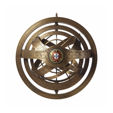

Tugazenship
Android & iOS • Multiplatform Native App
Saiba exatamente em que fase se encontra o seu pedido de cidadania portuguesa com atualizações do IRN, estimativas preditivas e guia completo de artigos.
Funcionalidades Principais
Informação transparente, segura e otimizada para quem acompanha processos de cidadania.
Rastreio em Tempo Real do IRN
Consulta direta do estado do processo introduzindo a chave de acesso, data de submissão e artigo. Atualizações periódicas dos avanços nas fases oficiais do IRN.
Previsões Inteligentes & Conclusão
Algoritmo preditivo avançado que calcula a percentagem de progresso, data estimada de conclusão, dias de atraso e tempo médio restante com base no histórico real.
Guia Completo dos 18+ Artigos
Requisitos documentais e condições detalhadas para Artigo 1-C (Ius Soli), 1-D (Netos), 2 (Filhos no estrangeiro), 3.1 (Casamento), 6.1 (Residência 5 anos), 6.7 (Sefarditas), 6.9 e mais.
Análise por Conservatória
Descubra como varia o volume de trabalho e o ritmo de resposta entre Conservatórias (CRCentrais Lisboa, CRC Porto, Braga, Coimbra, etc.).
Suporte Multilingue (6 Idiomas)
Interface acessível em Português, Inglês, Hindi, Bengali, Urdu e Ucraniano para apoiar comunidades de requerentes em todo o mundo.
Sincronização Segura & Multi-Processos
Autenticação simples com Google e Microsoft via Firebase Auth para sincronizar múltiplos processos de família entre Android e iOS com encriptação de dados.
Arquitetura & Tecnologia
Construído com a stack Compose Multiplatform (Kotlin 2.4) para máxima performance nativa no Android e iOS.
- ✓ UI: Jetpack Compose Multiplatform & Material 3
- ✓ Injeção de Dependências: Koin DI
- ✓ Autenticação: Firebase Auth (Google & Microsoft)
- ✓ Base de Dados: Cloud Firestore & Kotlinx Serialization
- ✓ Cliente HTTP: Ktor Client
- ✓ Data Engine: Kotlinx Datetime & Cálculo de Backlog
- ✓ Privacidade & Ads: Google AdMob com consentimento UMP
Conformidade & Privacidade
Os seus dados estão protegidos sob o Regulamento Geral sobre a Proteção de Dados (RGPD). Oferecemos total transparência e autonomia.